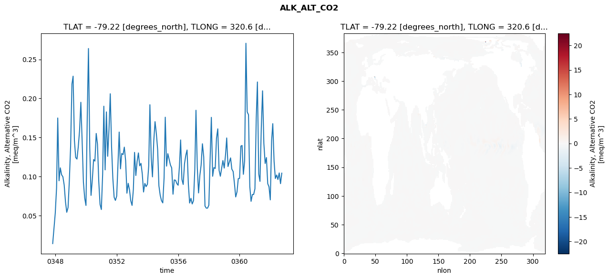
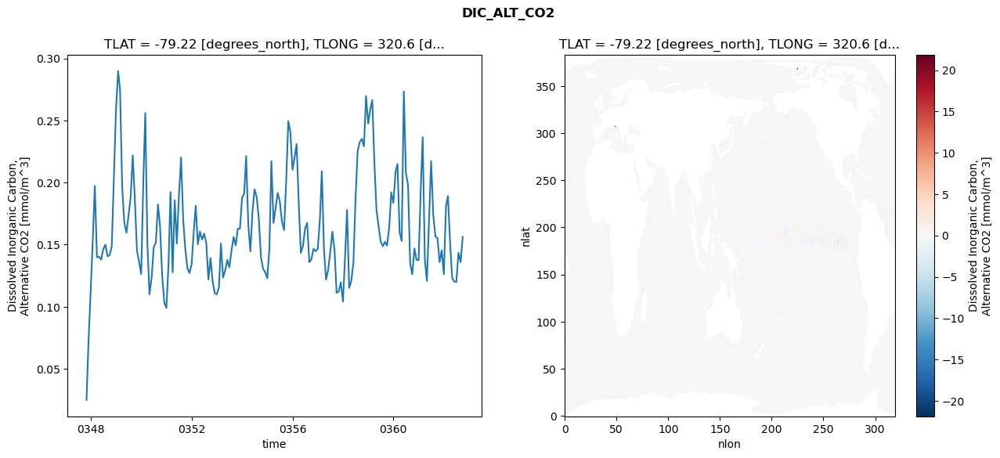
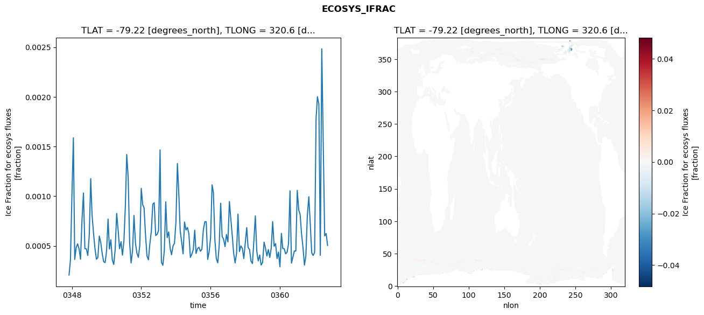
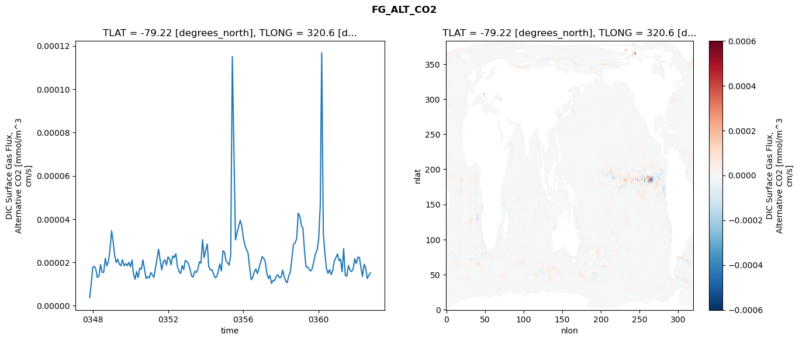

glb-dor_North_Atlantic_basin_026_1999-10-01_00107#
Simulation details#
Case: smyle.cdr-atlas-v0.glb-dor_North_Atlantic_basin_026_1999-10-01_00107.001
Basin: North_Atlantic_basin
Polygon: 26.0
Start date: 1999-10
Show code cell source Hide code cell source
import xarray as xr
import matplotlib.pyplot as plt
Show code cell source Hide code cell source
zarr_store = "/path/to/zarr/store"
# Parameters
zarr_store = "/global/cfs/projectdirs/m4746/Projects/Ocean-CDR-Atlas-v0/data/validation/smyle.cdr-atlas-v0.glb-dor_North_Atlantic_basin_026_1999-10-01_00107.001.validation.zarr"
Show code cell source Hide code cell source
%%time
ds_o = xr.open_zarr(zarr_store).compute()
ds_o
CPU times: user 597 ms, sys: 435 ms, total: 1.03 s
Wall time: 1.2 s
<xarray.Dataset> Size: 2MB
Dimensions: (nlat: 384, nlon: 320, time: 180)
Coordinates:
TLAT float64 8B -79.22
TLONG float64 8B 320.6
ULAT float64 8B -78.95
ULONG float64 8B 321.1
* time (time) object 1kB 0347-11-01 00:00:00 ... 0362-10-01 0...
z_t float32 4B 500.0
Dimensions without coordinates: nlat, nlon
Data variables:
ALK_ALT_CO2_diff (nlat, nlon) float32 492kB nan nan nan ... nan nan nan
ALK_ALT_CO2_rmse (time) float64 1kB 0.01399 0.03336 ... 0.09081 0.1043
DIC_ALT_CO2_diff (nlat, nlon) float32 492kB nan nan nan ... nan nan nan
DIC_ALT_CO2_rmse (time) float64 1kB 0.02494 0.07411 ... 0.1359 0.1563
ECOSYS_IFRAC_diff (nlat, nlon) float32 492kB nan nan nan ... nan nan nan
ECOSYS_IFRAC_rmse (time) float64 1kB 0.0002067 0.0003575 ... 0.0005043
FG_ALT_CO2_diff (nlat, nlon) float32 492kB nan nan nan ... nan nan nan
FG_ALT_CO2_rmse (time) float64 1kB 3.676e-06 9.706e-06 ... 1.516e-05xarray.Dataset
- nlat: 384
- nlon: 320
- time: 180
- TLAT()float64-79.22
- long_name :
- array of t-grid latitudes
- units :
- degrees_north
array(-79.22052261)
- TLONG()float64320.6
- long_name :
- array of t-grid longitudes
- units :
- degrees_east
array(320.56250892)
- ULAT()float64-78.95
- long_name :
- array of u-grid latitudes
- units :
- degrees_north
array(-78.95289509)
- ULONG()float64321.1
- long_name :
- array of u-grid longitudes
- units :
- degrees_east
array(321.12500894)
- time(time)object0347-11-01 00:00:00 ... 0362-10-...
- bounds :
- time_bound
- long_name :
- time
array([cftime.DatetimeNoLeap(347, 11, 1, 0, 0, 0, 0, has_year_zero=True), cftime.DatetimeNoLeap(347, 12, 1, 0, 0, 0, 0, has_year_zero=True), cftime.DatetimeNoLeap(348, 1, 1, 0, 0, 0, 0, has_year_zero=True), cftime.DatetimeNoLeap(348, 2, 1, 0, 0, 0, 0, has_year_zero=True), cftime.DatetimeNoLeap(348, 3, 1, 0, 0, 0, 0, has_year_zero=True), cftime.DatetimeNoLeap(348, 4, 1, 0, 0, 0, 0, has_year_zero=True), cftime.DatetimeNoLeap(348, 5, 1, 0, 0, 0, 0, has_year_zero=True), cftime.DatetimeNoLeap(348, 6, 1, 0, 0, 0, 0, has_year_zero=True), cftime.DatetimeNoLeap(348, 7, 1, 0, 0, 0, 0, has_year_zero=True), cftime.DatetimeNoLeap(348, 8, 1, 0, 0, 0, 0, has_year_zero=True), cftime.DatetimeNoLeap(348, 9, 1, 0, 0, 0, 0, has_year_zero=True), cftime.DatetimeNoLeap(348, 10, 1, 0, 0, 0, 0, has_year_zero=True), cftime.DatetimeNoLeap(348, 11, 1, 0, 0, 0, 0, has_year_zero=True), cftime.DatetimeNoLeap(348, 12, 1, 0, 0, 0, 0, has_year_zero=True), cftime.DatetimeNoLeap(349, 1, 1, 0, 0, 0, 0, has_year_zero=True), cftime.DatetimeNoLeap(349, 2, 1, 0, 0, 0, 0, has_year_zero=True), cftime.DatetimeNoLeap(349, 3, 1, 0, 0, 0, 0, has_year_zero=True), cftime.DatetimeNoLeap(349, 4, 1, 0, 0, 0, 0, has_year_zero=True), cftime.DatetimeNoLeap(349, 5, 1, 0, 0, 0, 0, has_year_zero=True), cftime.DatetimeNoLeap(349, 6, 1, 0, 0, 0, 0, has_year_zero=True), cftime.DatetimeNoLeap(349, 7, 1, 0, 0, 0, 0, has_year_zero=True), cftime.DatetimeNoLeap(349, 8, 1, 0, 0, 0, 0, has_year_zero=True), cftime.DatetimeNoLeap(349, 9, 1, 0, 0, 0, 0, has_year_zero=True), cftime.DatetimeNoLeap(349, 10, 1, 0, 0, 0, 0, has_year_zero=True), cftime.DatetimeNoLeap(349, 11, 1, 0, 0, 0, 0, has_year_zero=True), cftime.DatetimeNoLeap(349, 12, 1, 0, 0, 0, 0, has_year_zero=True), cftime.DatetimeNoLeap(350, 1, 1, 0, 0, 0, 0, has_year_zero=True), cftime.DatetimeNoLeap(350, 2, 1, 0, 0, 0, 0, has_year_zero=True), cftime.DatetimeNoLeap(350, 3, 1, 0, 0, 0, 0, has_year_zero=True), cftime.DatetimeNoLeap(350, 4, 1, 0, 0, 0, 0, has_year_zero=True), cftime.DatetimeNoLeap(350, 5, 1, 0, 0, 0, 0, has_year_zero=True), cftime.DatetimeNoLeap(350, 6, 1, 0, 0, 0, 0, has_year_zero=True), cftime.DatetimeNoLeap(350, 7, 1, 0, 0, 0, 0, has_year_zero=True), cftime.DatetimeNoLeap(350, 8, 1, 0, 0, 0, 0, has_year_zero=True), cftime.DatetimeNoLeap(350, 9, 1, 0, 0, 0, 0, has_year_zero=True), cftime.DatetimeNoLeap(350, 10, 1, 0, 0, 0, 0, has_year_zero=True), cftime.DatetimeNoLeap(350, 11, 1, 0, 0, 0, 0, has_year_zero=True), cftime.DatetimeNoLeap(350, 12, 1, 0, 0, 0, 0, has_year_zero=True), cftime.DatetimeNoLeap(351, 1, 1, 0, 0, 0, 0, has_year_zero=True), cftime.DatetimeNoLeap(351, 2, 1, 0, 0, 0, 0, has_year_zero=True), cftime.DatetimeNoLeap(351, 3, 1, 0, 0, 0, 0, has_year_zero=True), cftime.DatetimeNoLeap(351, 4, 1, 0, 0, 0, 0, has_year_zero=True), cftime.DatetimeNoLeap(351, 5, 1, 0, 0, 0, 0, has_year_zero=True), cftime.DatetimeNoLeap(351, 6, 1, 0, 0, 0, 0, has_year_zero=True), cftime.DatetimeNoLeap(351, 7, 1, 0, 0, 0, 0, has_year_zero=True), cftime.DatetimeNoLeap(351, 8, 1, 0, 0, 0, 0, has_year_zero=True), cftime.DatetimeNoLeap(351, 9, 1, 0, 0, 0, 0, has_year_zero=True), cftime.DatetimeNoLeap(351, 10, 1, 0, 0, 0, 0, has_year_zero=True), cftime.DatetimeNoLeap(351, 11, 1, 0, 0, 0, 0, has_year_zero=True), cftime.DatetimeNoLeap(351, 12, 1, 0, 0, 0, 0, has_year_zero=True), cftime.DatetimeNoLeap(352, 1, 1, 0, 0, 0, 0, has_year_zero=True), cftime.DatetimeNoLeap(352, 2, 1, 0, 0, 0, 0, has_year_zero=True), cftime.DatetimeNoLeap(352, 3, 1, 0, 0, 0, 0, has_year_zero=True), cftime.DatetimeNoLeap(352, 4, 1, 0, 0, 0, 0, has_year_zero=True), cftime.DatetimeNoLeap(352, 5, 1, 0, 0, 0, 0, has_year_zero=True), cftime.DatetimeNoLeap(352, 6, 1, 0, 0, 0, 0, has_year_zero=True), cftime.DatetimeNoLeap(352, 7, 1, 0, 0, 0, 0, has_year_zero=True), cftime.DatetimeNoLeap(352, 8, 1, 0, 0, 0, 0, has_year_zero=True), cftime.DatetimeNoLeap(352, 9, 1, 0, 0, 0, 0, has_year_zero=True), cftime.DatetimeNoLeap(352, 10, 1, 0, 0, 0, 0, has_year_zero=True), cftime.DatetimeNoLeap(352, 11, 1, 0, 0, 0, 0, has_year_zero=True), cftime.DatetimeNoLeap(352, 12, 1, 0, 0, 0, 0, has_year_zero=True), cftime.DatetimeNoLeap(353, 1, 1, 0, 0, 0, 0, has_year_zero=True), cftime.DatetimeNoLeap(353, 2, 1, 0, 0, 0, 0, has_year_zero=True), cftime.DatetimeNoLeap(353, 3, 1, 0, 0, 0, 0, has_year_zero=True), cftime.DatetimeNoLeap(353, 4, 1, 0, 0, 0, 0, has_year_zero=True), cftime.DatetimeNoLeap(353, 5, 1, 0, 0, 0, 0, has_year_zero=True), cftime.DatetimeNoLeap(353, 6, 1, 0, 0, 0, 0, has_year_zero=True), cftime.DatetimeNoLeap(353, 7, 1, 0, 0, 0, 0, has_year_zero=True), cftime.DatetimeNoLeap(353, 8, 1, 0, 0, 0, 0, has_year_zero=True), cftime.DatetimeNoLeap(353, 9, 1, 0, 0, 0, 0, has_year_zero=True), cftime.DatetimeNoLeap(353, 10, 1, 0, 0, 0, 0, has_year_zero=True), cftime.DatetimeNoLeap(353, 11, 1, 0, 0, 0, 0, has_year_zero=True), cftime.DatetimeNoLeap(353, 12, 1, 0, 0, 0, 0, has_year_zero=True), cftime.DatetimeNoLeap(354, 1, 1, 0, 0, 0, 0, has_year_zero=True), cftime.DatetimeNoLeap(354, 2, 1, 0, 0, 0, 0, has_year_zero=True), cftime.DatetimeNoLeap(354, 3, 1, 0, 0, 0, 0, has_year_zero=True), cftime.DatetimeNoLeap(354, 4, 1, 0, 0, 0, 0, has_year_zero=True), cftime.DatetimeNoLeap(354, 5, 1, 0, 0, 0, 0, has_year_zero=True), cftime.DatetimeNoLeap(354, 6, 1, 0, 0, 0, 0, has_year_zero=True), cftime.DatetimeNoLeap(354, 7, 1, 0, 0, 0, 0, has_year_zero=True), cftime.DatetimeNoLeap(354, 8, 1, 0, 0, 0, 0, has_year_zero=True), cftime.DatetimeNoLeap(354, 9, 1, 0, 0, 0, 0, has_year_zero=True), cftime.DatetimeNoLeap(354, 10, 1, 0, 0, 0, 0, has_year_zero=True), cftime.DatetimeNoLeap(354, 11, 1, 0, 0, 0, 0, has_year_zero=True), cftime.DatetimeNoLeap(354, 12, 1, 0, 0, 0, 0, has_year_zero=True), cftime.DatetimeNoLeap(355, 1, 1, 0, 0, 0, 0, has_year_zero=True), cftime.DatetimeNoLeap(355, 2, 1, 0, 0, 0, 0, has_year_zero=True), cftime.DatetimeNoLeap(355, 3, 1, 0, 0, 0, 0, has_year_zero=True), cftime.DatetimeNoLeap(355, 4, 1, 0, 0, 0, 0, has_year_zero=True), cftime.DatetimeNoLeap(355, 5, 1, 0, 0, 0, 0, has_year_zero=True), cftime.DatetimeNoLeap(355, 6, 1, 0, 0, 0, 0, has_year_zero=True), cftime.DatetimeNoLeap(355, 7, 1, 0, 0, 0, 0, has_year_zero=True), cftime.DatetimeNoLeap(355, 8, 1, 0, 0, 0, 0, has_year_zero=True), cftime.DatetimeNoLeap(355, 9, 1, 0, 0, 0, 0, has_year_zero=True), cftime.DatetimeNoLeap(355, 10, 1, 0, 0, 0, 0, has_year_zero=True), cftime.DatetimeNoLeap(355, 11, 1, 0, 0, 0, 0, has_year_zero=True), cftime.DatetimeNoLeap(355, 12, 1, 0, 0, 0, 0, has_year_zero=True), cftime.DatetimeNoLeap(356, 1, 1, 0, 0, 0, 0, has_year_zero=True), cftime.DatetimeNoLeap(356, 2, 1, 0, 0, 0, 0, has_year_zero=True), cftime.DatetimeNoLeap(356, 3, 1, 0, 0, 0, 0, has_year_zero=True), cftime.DatetimeNoLeap(356, 4, 1, 0, 0, 0, 0, has_year_zero=True), cftime.DatetimeNoLeap(356, 5, 1, 0, 0, 0, 0, has_year_zero=True), cftime.DatetimeNoLeap(356, 6, 1, 0, 0, 0, 0, has_year_zero=True), cftime.DatetimeNoLeap(356, 7, 1, 0, 0, 0, 0, has_year_zero=True), cftime.DatetimeNoLeap(356, 8, 1, 0, 0, 0, 0, has_year_zero=True), cftime.DatetimeNoLeap(356, 9, 1, 0, 0, 0, 0, has_year_zero=True), cftime.DatetimeNoLeap(356, 10, 1, 0, 0, 0, 0, has_year_zero=True), cftime.DatetimeNoLeap(356, 11, 1, 0, 0, 0, 0, has_year_zero=True), cftime.DatetimeNoLeap(356, 12, 1, 0, 0, 0, 0, has_year_zero=True), cftime.DatetimeNoLeap(357, 1, 1, 0, 0, 0, 0, has_year_zero=True), cftime.DatetimeNoLeap(357, 2, 1, 0, 0, 0, 0, has_year_zero=True), cftime.DatetimeNoLeap(357, 3, 1, 0, 0, 0, 0, has_year_zero=True), cftime.DatetimeNoLeap(357, 4, 1, 0, 0, 0, 0, has_year_zero=True), cftime.DatetimeNoLeap(357, 5, 1, 0, 0, 0, 0, has_year_zero=True), cftime.DatetimeNoLeap(357, 6, 1, 0, 0, 0, 0, has_year_zero=True), cftime.DatetimeNoLeap(357, 7, 1, 0, 0, 0, 0, has_year_zero=True), cftime.DatetimeNoLeap(357, 8, 1, 0, 0, 0, 0, has_year_zero=True), cftime.DatetimeNoLeap(357, 9, 1, 0, 0, 0, 0, has_year_zero=True), cftime.DatetimeNoLeap(357, 10, 1, 0, 0, 0, 0, has_year_zero=True), cftime.DatetimeNoLeap(357, 11, 1, 0, 0, 0, 0, has_year_zero=True), cftime.DatetimeNoLeap(357, 12, 1, 0, 0, 0, 0, has_year_zero=True), cftime.DatetimeNoLeap(358, 1, 1, 0, 0, 0, 0, has_year_zero=True), cftime.DatetimeNoLeap(358, 2, 1, 0, 0, 0, 0, has_year_zero=True), cftime.DatetimeNoLeap(358, 3, 1, 0, 0, 0, 0, has_year_zero=True), cftime.DatetimeNoLeap(358, 4, 1, 0, 0, 0, 0, has_year_zero=True), cftime.DatetimeNoLeap(358, 5, 1, 0, 0, 0, 0, has_year_zero=True), cftime.DatetimeNoLeap(358, 6, 1, 0, 0, 0, 0, has_year_zero=True), cftime.DatetimeNoLeap(358, 7, 1, 0, 0, 0, 0, has_year_zero=True), cftime.DatetimeNoLeap(358, 8, 1, 0, 0, 0, 0, has_year_zero=True), cftime.DatetimeNoLeap(358, 9, 1, 0, 0, 0, 0, has_year_zero=True), cftime.DatetimeNoLeap(358, 10, 1, 0, 0, 0, 0, has_year_zero=True), cftime.DatetimeNoLeap(358, 11, 1, 0, 0, 0, 0, has_year_zero=True), cftime.DatetimeNoLeap(358, 12, 1, 0, 0, 0, 0, has_year_zero=True), cftime.DatetimeNoLeap(359, 1, 1, 0, 0, 0, 0, has_year_zero=True), cftime.DatetimeNoLeap(359, 2, 1, 0, 0, 0, 0, has_year_zero=True), cftime.DatetimeNoLeap(359, 3, 1, 0, 0, 0, 0, has_year_zero=True), cftime.DatetimeNoLeap(359, 4, 1, 0, 0, 0, 0, has_year_zero=True), cftime.DatetimeNoLeap(359, 5, 1, 0, 0, 0, 0, has_year_zero=True), cftime.DatetimeNoLeap(359, 6, 1, 0, 0, 0, 0, has_year_zero=True), cftime.DatetimeNoLeap(359, 7, 1, 0, 0, 0, 0, has_year_zero=True), cftime.DatetimeNoLeap(359, 8, 1, 0, 0, 0, 0, has_year_zero=True), cftime.DatetimeNoLeap(359, 9, 1, 0, 0, 0, 0, has_year_zero=True), cftime.DatetimeNoLeap(359, 10, 1, 0, 0, 0, 0, has_year_zero=True), cftime.DatetimeNoLeap(359, 11, 1, 0, 0, 0, 0, has_year_zero=True), cftime.DatetimeNoLeap(359, 12, 1, 0, 0, 0, 0, has_year_zero=True), cftime.DatetimeNoLeap(360, 1, 1, 0, 0, 0, 0, has_year_zero=True), cftime.DatetimeNoLeap(360, 2, 1, 0, 0, 0, 0, has_year_zero=True), cftime.DatetimeNoLeap(360, 3, 1, 0, 0, 0, 0, has_year_zero=True), cftime.DatetimeNoLeap(360, 4, 1, 0, 0, 0, 0, has_year_zero=True), cftime.DatetimeNoLeap(360, 5, 1, 0, 0, 0, 0, has_year_zero=True), cftime.DatetimeNoLeap(360, 6, 1, 0, 0, 0, 0, has_year_zero=True), cftime.DatetimeNoLeap(360, 7, 1, 0, 0, 0, 0, has_year_zero=True), cftime.DatetimeNoLeap(360, 8, 1, 0, 0, 0, 0, has_year_zero=True), cftime.DatetimeNoLeap(360, 9, 1, 0, 0, 0, 0, has_year_zero=True), cftime.DatetimeNoLeap(360, 10, 1, 0, 0, 0, 0, has_year_zero=True), cftime.DatetimeNoLeap(360, 11, 1, 0, 0, 0, 0, has_year_zero=True), cftime.DatetimeNoLeap(360, 12, 1, 0, 0, 0, 0, has_year_zero=True), cftime.DatetimeNoLeap(361, 1, 1, 0, 0, 0, 0, has_year_zero=True), cftime.DatetimeNoLeap(361, 2, 1, 0, 0, 0, 0, has_year_zero=True), cftime.DatetimeNoLeap(361, 3, 1, 0, 0, 0, 0, has_year_zero=True), cftime.DatetimeNoLeap(361, 4, 1, 0, 0, 0, 0, has_year_zero=True), cftime.DatetimeNoLeap(361, 5, 1, 0, 0, 0, 0, has_year_zero=True), cftime.DatetimeNoLeap(361, 6, 1, 0, 0, 0, 0, has_year_zero=True), cftime.DatetimeNoLeap(361, 7, 1, 0, 0, 0, 0, has_year_zero=True), cftime.DatetimeNoLeap(361, 8, 1, 0, 0, 0, 0, has_year_zero=True), cftime.DatetimeNoLeap(361, 9, 1, 0, 0, 0, 0, has_year_zero=True), cftime.DatetimeNoLeap(361, 10, 1, 0, 0, 0, 0, has_year_zero=True), cftime.DatetimeNoLeap(361, 11, 1, 0, 0, 0, 0, has_year_zero=True), cftime.DatetimeNoLeap(361, 12, 1, 0, 0, 0, 0, has_year_zero=True), cftime.DatetimeNoLeap(362, 1, 1, 0, 0, 0, 0, has_year_zero=True), cftime.DatetimeNoLeap(362, 2, 1, 0, 0, 0, 0, has_year_zero=True), cftime.DatetimeNoLeap(362, 3, 1, 0, 0, 0, 0, has_year_zero=True), cftime.DatetimeNoLeap(362, 4, 1, 0, 0, 0, 0, has_year_zero=True), cftime.DatetimeNoLeap(362, 5, 1, 0, 0, 0, 0, has_year_zero=True), cftime.DatetimeNoLeap(362, 6, 1, 0, 0, 0, 0, has_year_zero=True), cftime.DatetimeNoLeap(362, 7, 1, 0, 0, 0, 0, has_year_zero=True), cftime.DatetimeNoLeap(362, 8, 1, 0, 0, 0, 0, has_year_zero=True), cftime.DatetimeNoLeap(362, 9, 1, 0, 0, 0, 0, has_year_zero=True), cftime.DatetimeNoLeap(362, 10, 1, 0, 0, 0, 0, has_year_zero=True)], dtype=object) - z_t()float32500.0
- long_name :
- depth from surface to midpoint of layer
- positive :
- down
- units :
- centimeters
- valid_max :
- 537500.0
- valid_min :
- 500.0
array(500., dtype=float32)
- ALK_ALT_CO2_diff(nlat, nlon)float32nan nan nan nan ... nan nan nan nan
- cell_methods :
- time: mean
- grid_loc :
- 3111
- long_name :
- Alkalinity, Alternative CO2
- units :
- meq/m^3
array([[ nan, nan, nan, ..., nan, nan, nan], [ nan, nan, nan, ..., nan, nan, nan], [0.01245117, 0.0168457 , 0.01269531, ..., nan, nan, nan], ..., [ nan, nan, nan, ..., nan, nan, nan], [ nan, nan, nan, ..., nan, nan, nan], [ nan, nan, nan, ..., nan, nan, nan]], dtype=float32) - ALK_ALT_CO2_rmse(time)float640.01399 0.03336 ... 0.09081 0.1043
- cell_methods :
- time: mean
- grid_loc :
- 3111
- long_name :
- Alkalinity, Alternative CO2
- units :
- meq/m^3
array([0.01398707, 0.03335646, 0.05305528, 0.0855124 , 0.17494805, 0.09448782, 0.1110554 , 0.10210248, 0.09969563, 0.08908014, 0.06743909, 0.05410552, 0.06013644, 0.09401894, 0.13872703, 0.21840363, 0.2285475 , 0.14634724, 0.12432816, 0.12230445, 0.1376372 , 0.15848043, 0.19509742, 0.14658093, 0.09268304, 0.0724128 , 0.0628619 , 0.17897439, 0.26402559, 0.13627415, 0.07573527, 0.09597301, 0.12173021, 0.11968686, 0.15513554, 0.14137473, 0.0935007 , 0.06425844, 0.05764922, 0.10281452, 0.19006668, 0.10847996, 0.18279064, 0.12586938, 0.15934682, 0.20601604, 0.13804711, 0.09793255, 0.07337775, 0.06930893, 0.07488661, 0.11678489, 0.15693516, 0.10979729, 0.12944174, 0.1280767 , 0.13759055, 0.12039733, 0.07858274, 0.09120378, 0.08299293, 0.06889411, 0.0628945 , 0.08342327, 0.1308841 , 0.1012218 , 0.11923539, 0.13018698, 0.11366258, 0.11680974, 0.10321175, 0.08010751, 0.0911532 , 0.08698229, 0.09005017, 0.11366032, 0.19197017, 0.12431132, 0.09948716, 0.14556082, 0.17027638, 0.15520541, 0.13449686, 0.08804407, 0.07584635, 0.06908665, 0.06613736, 0.0982931 , 0.17596274, 0.1132578 , 0.12923942, 0.12207974, 0.11481066, 0.11101983, 0.07727525, 0.09558408, 0.09506742, 0.09088478, 0.08876696, 0.11353365, 0.14680685, 0.09618742, 0.08977456, 0.11623172, 0.12694666, 0.13390208, 0.09007677, 0.06597807, 0.07206242, 0.06477441, 0.06897222, 0.10882936, 0.18486687, 0.11164571, 0.0789017 , 0.10142555, 0.11447986, 0.14192343, 0.12514276, 0.06209352, 0.0594126 , 0.05942815, 0.06319743, 0.12449133, 0.17579054, 0.10027525, 0.11136568, 0.11030416, 0.14909711, 0.16103441, 0.10785037, 0.10029662, 0.11069499, 0.12040318, 0.11074735, 0.12767394, 0.14937265, 0.11278272, 0.11820097, 0.12383053, 0.10938919, 0.10637165, 0.09090556, 0.0737673 , 0.08026212, 0.09719995, 0.09753782, 0.13891836, 0.13971992, 0.10275742, 0.11989551, 0.27074557, 0.18269861, 0.17917367, 0.08715748, 0.06814154, 0.07690996, 0.07684951, 0.08415404, 0.17488997, 0.22112996, 0.1031099 , 0.09373016, 0.16239485, 0.20981047, 0.14245277, 0.11668172, 0.1242442 , 0.09082426, 0.08674789, 0.07002224, 0.14576465, 0.16770518, 0.11940534, 0.09738858, 0.10190015, 0.0961199 , 0.10453235, 0.09081189, 0.10427878]) - DIC_ALT_CO2_diff(nlat, nlon)float32nan nan nan nan ... nan nan nan nan
- cell_methods :
- time: mean
- grid_loc :
- 3111
- long_name :
- Dissolved Inorganic Carbon, Alternative CO2
- units :
- mmol/m^3
array([[ nan, nan, nan, ..., nan, nan, nan], [ nan, nan, nan, ..., nan, nan, nan], [0.00952148, 0.01513672, 0.00805664, ..., nan, nan, nan], ..., [ nan, nan, nan, ..., nan, nan, nan], [ nan, nan, nan, ..., nan, nan, nan], [ nan, nan, nan, ..., nan, nan, nan]], dtype=float32) - DIC_ALT_CO2_rmse(time)float640.02494 0.07411 ... 0.1359 0.1563
- cell_methods :
- time: mean
- grid_loc :
- 3111
- long_name :
- Dissolved Inorganic Carbon, Alternative CO2
- units :
- mmol/m^3
array([0.0249393 , 0.07410973, 0.1136013 , 0.15615183, 0.19721945, 0.13980681, 0.14026729, 0.13798685, 0.14631399, 0.1500317 , 0.14062788, 0.14134868, 0.14865496, 0.20317938, 0.25790523, 0.28988884, 0.27483078, 0.19658222, 0.16825825, 0.15964614, 0.17297276, 0.18805925, 0.22190028, 0.18666376, 0.14521806, 0.13625594, 0.12636985, 0.20102273, 0.25608168, 0.15044907, 0.10996187, 0.12350967, 0.14779905, 0.15159595, 0.1824082 , 0.16455913, 0.12499545, 0.10346107, 0.09902448, 0.13515288, 0.19234303, 0.12771697, 0.18579915, 0.15086941, 0.189049 , 0.22019674, 0.17035922, 0.14650782, 0.13122118, 0.12710286, 0.13415305, 0.1606008 , 0.18134664, 0.15031641, 0.16053726, 0.15412933, 0.15890895, 0.15120472, 0.12186665, 0.13927044, 0.1203154 , 0.11091082, 0.10995061, 0.11614402, 0.15097444, 0.12345202, 0.12915659, 0.13769429, 0.13176011, 0.14525133, 0.156199 , 0.14947356, 0.16280048, 0.16287462, 0.18778874, 0.19130698, 0.22129939, 0.16600207, 0.14459799, 0.17722803, 0.19461782, 0.18830087, 0.17040566, 0.14000586, 0.13049927, 0.12786604, 0.12296531, 0.14764525, 0.21725036, 0.16750267, 0.1796355 , 0.19169315, 0.18506133, 0.16866067, 0.16174153, 0.20045192, 0.24948347, 0.2407694 , 0.21036259, 0.2205553 , 0.23110007, 0.18401671, 0.14336207, 0.14893113, 0.16273071, 0.16759611, 0.13583775, 0.13818152, 0.14659343, 0.14473246, 0.14636187, 0.17007469, 0.20910318, 0.14679524, 0.12182615, 0.1297543 , 0.14408459, 0.16041311, 0.1456539 , 0.11116949, 0.11228321, 0.11965321, 0.10407649, 0.1405829 , 0.17794002, 0.11513091, 0.12071394, 0.13522894, 0.18492619, 0.22511328, 0.23259351, 0.23522651, 0.22924905, 0.26972747, 0.24746499, 0.25933666, 0.26649663, 0.21615362, 0.17818379, 0.16479252, 0.1526288 , 0.14874715, 0.15229963, 0.14928612, 0.16346084, 0.19211798, 0.18366453, 0.20854206, 0.21496642, 0.15993431, 0.1530285 , 0.27341025, 0.20775787, 0.19805318, 0.1348871 , 0.12612708, 0.14686897, 0.13775455, 0.1375457 , 0.19518652, 0.23656574, 0.13789578, 0.12066134, 0.17072946, 0.21734185, 0.1738337 , 0.15659651, 0.15516856, 0.13590158, 0.14538308, 0.12620383, 0.18073252, 0.18916254, 0.1524688 , 0.12321674, 0.12021316, 0.12000607, 0.14346384, 0.13594189, 0.15626589]) - ECOSYS_IFRAC_diff(nlat, nlon)float32nan nan nan nan ... nan nan nan nan
- cell_methods :
- time: mean
- grid_loc :
- 2110
- long_name :
- Ice Fraction for ecosys fluxes
- units :
- fraction
array([[ nan, nan, nan, ..., nan, nan, nan], [ nan, nan, nan, ..., nan, nan, nan], [-5.9604645e-07, 1.7285347e-06, 1.7285347e-06, ..., nan, nan, nan], ..., [ nan, nan, nan, ..., nan, nan, nan], [ nan, nan, nan, ..., nan, nan, nan], [ nan, nan, nan, ..., nan, nan, nan]], dtype=float32) - ECOSYS_IFRAC_rmse(time)float640.0002067 0.0003575 ... 0.0005043
- cell_methods :
- time: mean
- grid_loc :
- 2110
- long_name :
- Ice Fraction for ecosys fluxes
- units :
- fraction
array([0.00020666, 0.00035751, 0.00100959, 0.00158767, 0.00036308, 0.00048439, 0.00051996, 0.00046942, 0.00036538, 0.00076056, 0.00103237, 0.00047219, 0.0004691 , 0.00040366, 0.00060448, 0.0011767 , 0.00080915, 0.00062666, 0.0004747 , 0.00036564, 0.00038051, 0.00059877, 0.00053083, 0.00042126, 0.00034006, 0.00033163, 0.00045103, 0.00077004, 0.00046836, 0.00056155, 0.00035811, 0.00031323, 0.00046581, 0.00082654, 0.00066024, 0.00047124, 0.00054199, 0.00040695, 0.00055004, 0.0009153 , 0.00142011, 0.00118602, 0.00053351, 0.00032821, 0.00044722, 0.00080654, 0.00052732, 0.00042756, 0.00038462, 0.00050488, 0.00107854, 0.00091339, 0.0008837 , 0.00060674, 0.00039762, 0.00036007, 0.00051933, 0.00064753, 0.0009195 , 0.00093486, 0.00060452, 0.00061555, 0.00065507, 0.00146584, 0.00033548, 0.00030469, 0.00045018, 0.0009437 , 0.00058302, 0.00064074, 0.00047575, 0.00041079, 0.00049945, 0.00052567, 0.00073765, 0.00132864, 0.00104908, 0.00065202, 0.00054132, 0.00041941, 0.00074067, 0.00065979, 0.00068524, 0.00062125, 0.00038363, 0.00041657, 0.00046229, 0.0006588 , 0.00042335, 0.000473 , 0.00048551, 0.00044616, 0.00046508, 0.00065814, 0.00074364, 0.00074232, 0.00036366, 0.00044034, 0.00058355, 0.00111439, 0.00103635, 0.00056321, 0.00037212, 0.00032941, 0.00050287, 0.00092903, 0.00059576, 0.00056837, 0.0004923 , 0.00061502, 0.00053959, 0.00094655, 0.00078 , 0.0006094 , 0.00042699, 0.00032909, 0.00042353, 0.00081989, 0.00044296, 0.00050018, 0.00047444, 0.00037253, 0.00053139, 0.00068386, 0.00048539, 0.00046171, 0.00034804, 0.00032213, 0.00055035, 0.00080194, 0.00044108, 0.00034796, 0.00040806, 0.00030712, 0.00033378, 0.00053699, 0.00048194, 0.00039833, 0.00046313, 0.00038377, 0.00047581, 0.00074365, 0.0004956 , 0.00052335, 0.00037204, 0.00043768, 0.00028894, 0.00062552, 0.00047517, 0.00047102, 0.00041939, 0.00043704, 0.00052297, 0.00105417, 0.00032703, 0.0003872 , 0.00044851, 0.00044762, 0.00105824, 0.00086005, 0.00081908, 0.0006215 , 0.00048618, 0.00030639, 0.00039755, 0.00080762, 0.00099444, 0.00072839, 0.00042933, 0.00040332, 0.00043372, 0.001783 , 0.00200107, 0.00192645, 0.00040503, 0.00248305, 0.0015549 , 0.0006008 , 0.00062407, 0.00050431]) - FG_ALT_CO2_diff(nlat, nlon)float32nan nan nan nan ... nan nan nan nan
- cell_methods :
- time: mean
- grid_loc :
- 2110
- long_name :
- DIC Surface Gas Flux, Alternative CO2
- units :
- mmol/m^3 cm/s
array([[ nan, nan, nan, ..., nan, nan, nan], [ nan, nan, nan, ..., nan, nan, nan], [1.6940476e-09, 2.0023379e-09, 9.3174357e-10, ..., nan, nan, nan], ..., [ nan, nan, nan, ..., nan, nan, nan], [ nan, nan, nan, ..., nan, nan, nan], [ nan, nan, nan, ..., nan, nan, nan]], dtype=float32) - FG_ALT_CO2_rmse(time)float643.676e-06 9.706e-06 ... 1.516e-05
- cell_methods :
- time: mean
- grid_loc :
- 2110
- long_name :
- DIC Surface Gas Flux, Alternative CO2
- units :
- mmol/m^3 cm/s
array([3.67611766e-06, 9.70557984e-06, 1.77536580e-05, 1.82003655e-05, 1.68603638e-05, 1.30072426e-05, 1.37283350e-05, 1.89357104e-05, 1.53965361e-05, 1.54109317e-05, 2.18638563e-05, 1.83617977e-05, 2.05154031e-05, 2.57863279e-05, 3.45746445e-05, 2.94212602e-05, 2.32480879e-05, 1.98676234e-05, 2.14756833e-05, 1.91625092e-05, 1.84222569e-05, 2.12225535e-05, 1.83480705e-05, 1.94289332e-05, 1.84583304e-05, 2.00116270e-05, 1.79865793e-05, 2.10601455e-05, 1.49091133e-05, 1.21907408e-05, 1.57605681e-05, 1.29865033e-05, 1.73594697e-05, 1.68409690e-05, 2.11446325e-05, 1.68363547e-05, 1.25449862e-05, 1.34564876e-05, 1.27736728e-05, 1.53351118e-05, 1.42507673e-05, 1.30523566e-05, 1.72753276e-05, 2.18217868e-05, 2.60147467e-05, 2.09592779e-05, 1.64988398e-05, 2.02878747e-05, 2.11829206e-05, 1.88051047e-05, 2.25456023e-05, 2.15307994e-05, 1.88225081e-05, 2.29711025e-05, 2.21607131e-05, 2.40405021e-05, 1.81436126e-05, 1.58771218e-05, 1.48970769e-05, 1.85283531e-05, 1.66550509e-05, 2.08822358e-05, 2.03878926e-05, 1.93479753e-05, 1.71266934e-05, 1.36931899e-05, 1.32179584e-05, 1.58512244e-05, 1.53120429e-05, 1.67420369e-05, 2.02671643e-05, 1.96033758e-05, 3.05028046e-05, 2.21712553e-05, 2.54770841e-05, 2.84167256e-05, 1.79407197e-05, 1.65131318e-05, 1.65825696e-05, 1.46978388e-05, ... 2.60343851e-05, 2.44565048e-05, 1.79964296e-05, 1.19616912e-05, 1.29948052e-05, 1.56398192e-05, 1.69445971e-05, 1.47485401e-05, 1.74656312e-05, 1.99216416e-05, 2.26644578e-05, 2.18188178e-05, 2.04024687e-05, 1.51456469e-05, 1.25258022e-05, 1.39694067e-05, 1.02281831e-05, 1.16653822e-05, 1.16424064e-05, 1.35778896e-05, 1.42868489e-05, 1.28882755e-05, 1.31178103e-05, 1.64307871e-05, 1.36933054e-05, 1.14059050e-05, 1.06322113e-05, 1.39149233e-05, 1.55028424e-05, 2.19150239e-05, 2.84669736e-05, 2.89817180e-05, 3.09473134e-05, 4.27138732e-05, 4.12656875e-05, 3.68069407e-05, 3.59331144e-05, 2.56355918e-05, 1.78890345e-05, 1.79551355e-05, 1.66013099e-05, 1.60044202e-05, 1.73670848e-05, 2.06298527e-05, 2.40407909e-05, 2.56783177e-05, 3.07273044e-05, 4.63028644e-05, 1.16752853e-04, 3.37231598e-05, 2.44234668e-05, 1.72437292e-05, 1.48861307e-05, 1.66234652e-05, 1.43341159e-05, 1.63528973e-05, 2.07073986e-05, 2.21704276e-05, 2.39032562e-05, 2.07771650e-05, 2.15293098e-05, 1.56078584e-05, 2.63507937e-05, 1.39909263e-05, 1.35608452e-05, 1.85819768e-05, 1.63835348e-05, 1.57163479e-05, 1.69025394e-05, 2.17533996e-05, 1.93860948e-05, 2.24622649e-05, 2.22858302e-05, 1.75103057e-05, 1.35163877e-05, 1.91257569e-05, 1.76063065e-05, 1.25294223e-05, 1.39995973e-05, 1.51641479e-05])
- timePandasIndex
PandasIndex(CFTimeIndex([0347-11-01 00:00:00, 0347-12-01 00:00:00, 0348-01-01 00:00:00, 0348-02-01 00:00:00, 0348-03-01 00:00:00, 0348-04-01 00:00:00, 0348-05-01 00:00:00, 0348-06-01 00:00:00, 0348-07-01 00:00:00, 0348-08-01 00:00:00, ... 0362-01-01 00:00:00, 0362-02-01 00:00:00, 0362-03-01 00:00:00, 0362-04-01 00:00:00, 0362-05-01 00:00:00, 0362-06-01 00:00:00, 0362-07-01 00:00:00, 0362-08-01 00:00:00, 0362-09-01 00:00:00, 0362-10-01 00:00:00], dtype='object', length=180, calendar='noleap', freq='MS'))
Show code cell source Hide code cell source
variables = [v[:-5] for v in ds_o.variables if "_rmse" in v]
Show code cell source Hide code cell source
plt.rcParams.update({'figure.max_open_warning': 0})
for v in variables:
fig, axs = plt.subplots(1, 2, figsize=(15, 6))
ds_o[f"{v}_rmse"].plot(ax=axs[0])
ds_o[f"{v}_diff"].plot(ax=axs[1])
plt.suptitle(v, fontweight="bold")



